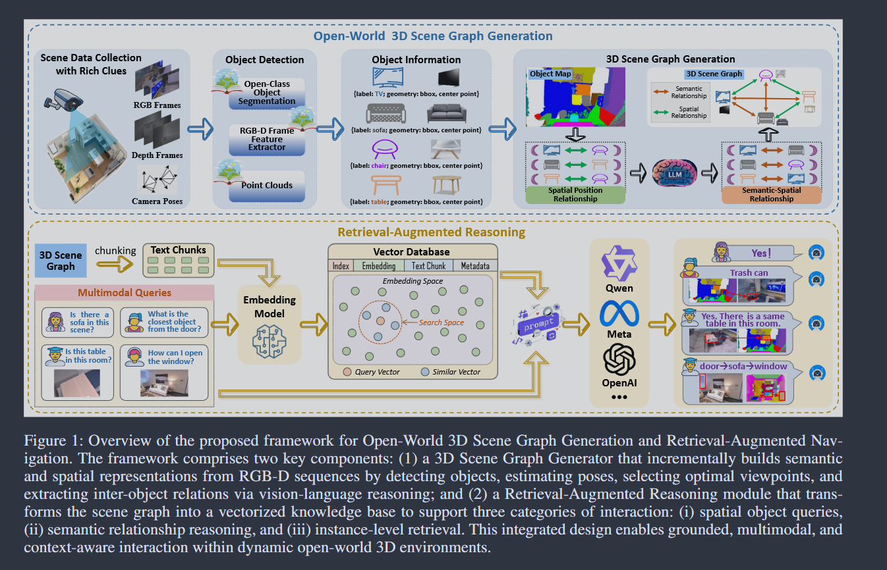

Source: Zotero note; match: identical attachment.Open item in Zotero
Understanding 3D scenes in open-world settings poses fundamental challenges for vision and robotics, particularly due to the limitations of closed-vocabulary supervision and static annotations. To address this, we propose a unified framework for Open-World 3D Scene Graph Generation with RetrievalAugmented Reasoning, which enables generalizable and interactive 3D scene understanding. Our method integrates Vision-Language Models (VLMs) with retrieval-based reasoning to support multimodal exploration and languageguided interaction. The framework comprises two key components: (1) a dynamic scene graph generation module that detects objects and infers semantic relationships without fixed label sets, and (2) a retrieval-augmented reasoning pipeline that encodes scene graphs into a vector database to support text/image-conditioned queries. We evaluate our method on 3DSSG and Replica benchmarks across four tasks—scene question answering, visual grounding, instance retrieval, and task planning—demonstrating robust generalization and superior performance in diverse environments. Our results highlight the effectiveness of combining open-vocabulary perception with retrieval-based reasoning for scalable 3D scene understanding.
1.Tags: unified framework for Open-World 3D Scene Graph Generation
2. Methodology

Tips: What aspects did you question, how do you think it can be improved?
Tips: What was done, what problem was solved, innovations and shortcomings?